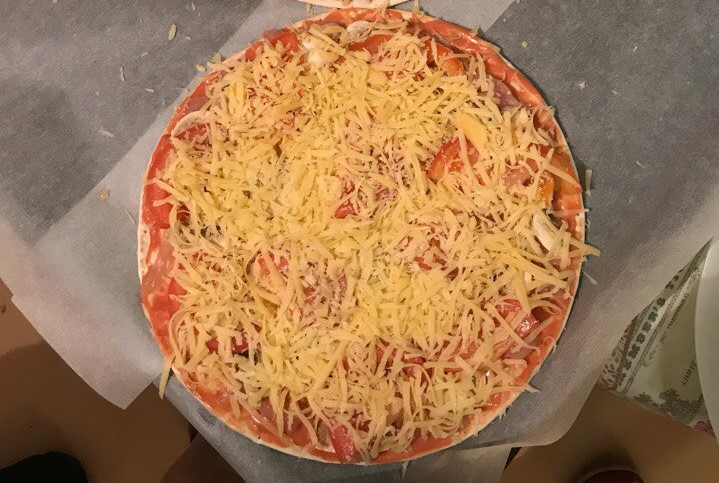
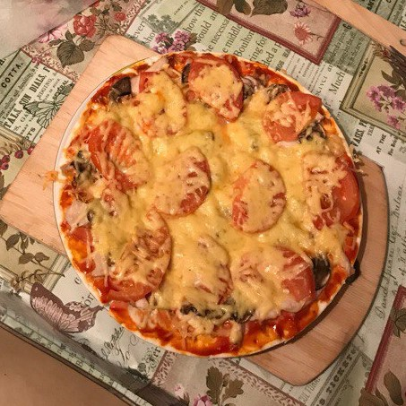

Данная статья поможет вам, имея начальные кулинарные навыки, приготовить в домашних условиях вкусную и сытную пиццу.Следуя этим несложным инструкциям, вы сможете насладиться пиццей и накормить своих семью и друзей.
Ингридиенты:
Тесто:
500 г муки 30 г свежих дрожжей Чайная ложка сахара Чайная ложка соли 3-4 столовые ложки оливкового масла 1/3 и 1 стакана теплой водой (240 мл + 60 мл)
300 г тертого твердого сыра любого грибы помидоры куриное филе
Процесс приготовления
ШАГ 1
Подготовить тесто: смешайте муку, сухие дрожжи и сахар.Сделать углубление в муке и в нее налить воду, масло и соль и замесить . Добавить 1/3 чашки воды , разминая тесто .Месить тесто пока не станет податливым. Сформируйте шар из теста и слегка припылить мукой , заверните в пищевую пленку и дайте подняться в течение приблизительно 1/2 в час.
ШАГ 2
Приготовление соуса: Разогреть сковороду с оливковым маслом, добавить помидоры с чеснок. Варить несколько минут и добавить базилик и остальные ингредиенты . Снять с огня.
ШАГ 3
Рабочую поверхности слегка посыпать мукой . Замесить тесто снова и раскатать его в круглую форму и уложить на посыпанную мукой бумагу для выпечки . Перенести на продвинь , и с помощью пальцев сформировать своего рода рамку вокруг пиццы , небольшой бортик .
ШАГ 4
Смажьте края теста с оливковым маслом, помазать соусом пиццу , посыпаем сыром и добавками, и запекать в духовке, предварительно нагретой до 200 градусов, пока не подрумянится
Пицца перед отправкой в духовку

Пицца в готовом виде

Во время употребления пиццы вы можете насладиться нашей прекрасной подборкой песен
Несколько сайтов содержащих различные способы приготовления домашней пиццы